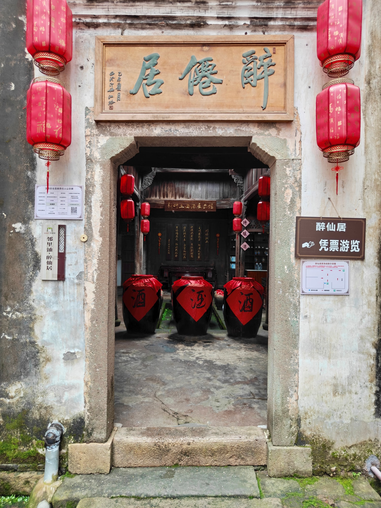
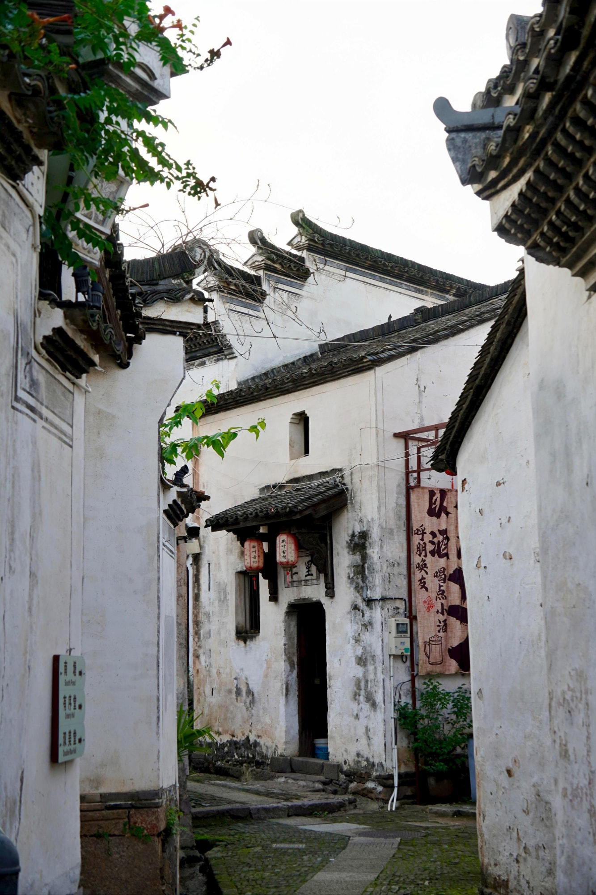
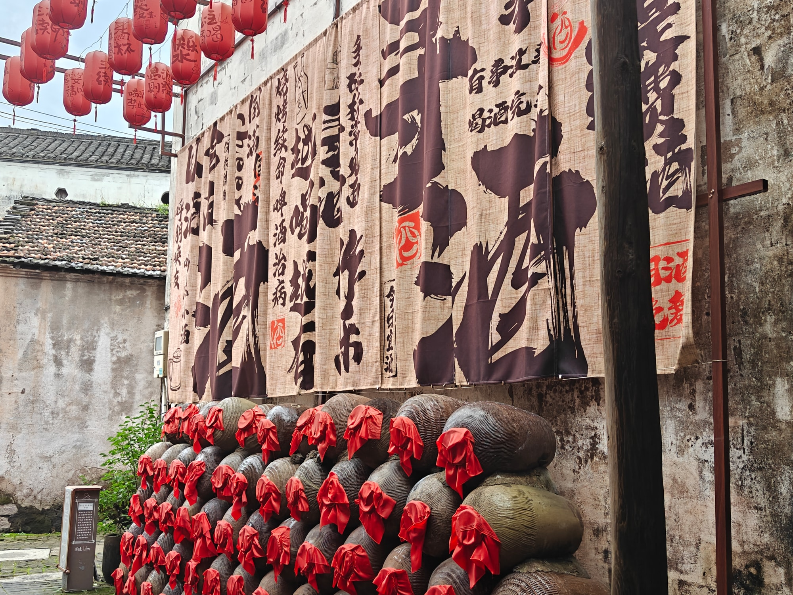

国保传统民居
从街巷走进深深院落贻燕堂（醉仙居）
贻燕堂又称醉仙居，是全国重点文物保护单位“新叶村乡土建筑”中的一座传统民居。两个名称并列沿用，为这座老宅留下了不同的识别方式。
01
由门厅进入厅堂

从临巷入口向内，门厅、厅堂与天井依次组织起宅院的进深。梁架和立柱构成室内的木构层次，天井则在封闭屋宇之间引入光线，使空间由外向内逐步展开。
02
门前就是村巷

贻燕堂的入口与村巷直接相接。建筑边界在这里也是街巷界面，进入宅院之前，先经过的是新叶村连续而紧凑的步行空间。
03
今天的酒文化展示

今天的醉仙居被用作酒文化主题展示空间，相关陈设属于老宅当下的使用内容。它为参观增加了新的体验，但不等同于这座建筑最初的建造缘由。